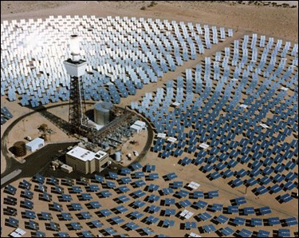
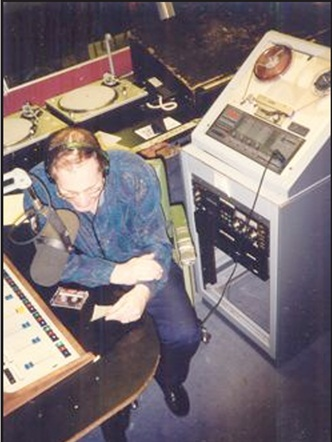
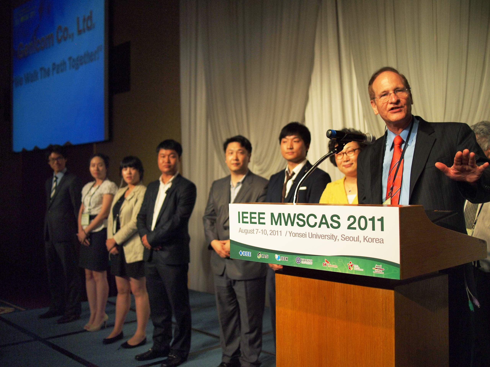
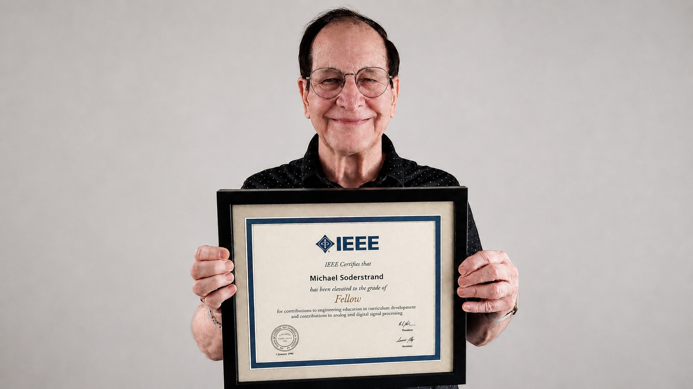

Research
For more than five decades, Professor Michael A. Soderstrand's research has focused on the theory, design, and implementation of analog and digital circuits and systems, with particular emphasis on active filter design, digital signal processing, residue number system arithmetic, adaptive filtering, and high-performance computer architectures. His work has consistently combined mathematical rigor with practical engineering, resulting in more than 200 refereed publications, several textbooks, three U.S. patents, and lasting contributions to both academia and industry.

Professor Soderstrand's research career began at Sandia National Laboratories, where he worked from 1968 through 1979 as a Member of the Technical Staff and Project Leader. His projects ranged from computer-based automatic test equipment and missile telemetry systems to renewable energy. He served as Project Manager for the Master Control System of Solar One, the pioneering central-receiver solar power plant near Barstow, California. Solar One demonstrated that mirror-based solar thermal generation could reliably produce utility-scale electrical power and became an important milestone in renewable energy development.

At UC Davis, Professor Soderstrand established an internationally recognized Circuits and Systems research laboratory that intentionally integrated undergraduate students into active research projects. One particularly innovative project extended beyond traditional electrical engineering research into the emerging field of Internet multimedia. In 1995, when Internet audio streaming was still in its infancy and only a handful of organizations worldwide were experimenting with live streaming, his laboratory developed one of the earliest systems for streaming the UC Davis student radio station KDVS over the Internet. Professor Soderstrand initiated the project in 1995, and students Mark Kim and Justin Cable refined and expanded the system during 1996–1997, helping transform it into a reliable service. This work demonstrated the practical application of digital signal processing, networking, and real-time systems at a time when Internet broadcasting was still a pioneering technology.
His technical research also produced important advances in active RC filters, Active-R filters, residue number system arithmetic, adaptive digital filtering, FPGA-based signal processing, wireless communications, and high-performance digital hardware. Two IEEE Press books—Modern Active Filter Design (1981) and Residue Number System Arithmetic: Modern Applications in Digital Signal Processing (1986)—became influential references in their respective fields.

Professor Soderstrand also provided extensive leadership to the international Circuits and Systems community, serving as General Chair of five major IEEE conferences, including the 2011 IEEE Midwest Symposium on Circuits and Systems in Seoul, Republic of Korea. He also served as Vice President of the IEEE Circuits and Systems Society, Founding Editor of IEEE Circuits and Systems Magazine, and Associate Editor of IEEE Transactions on Circuits and Systems.

In recognition of his research contributions, Professor Soderstrand was elevated to the grade of IEEE Fellow in 1999, one of the Institute's highest professional honors. The citation recognized his contributions to analog and digital circuits and systems. He was subsequently named an IEEE Life Fellow, reflecting the lasting international impact of his research, scholarship, and professional leadership.